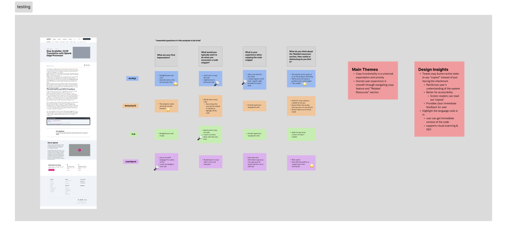

Cisco Splunk · UX Design Intern · Summer 2025
three projects. twelve weeks.
all shipped.
How I audited an entire enterprise web ecosystem, designed a demo discovery platform from zero to live, and innovated at a org-wide hackathon.
tldr; the outcomes
8+
domains audited, findings immediately prioritized across sprint teams
3 to 1
clicks reduced to find demos, Demo Center now live on splunk.com
100%
user satisfaction in testing for AI code snippet feature
Project 01
Heuristic evaluation of Splunk's entire web ecosystem
Audited 8 or more domains against Nielsen's 10 heuristics. Findings presented to all sprint teams and immediately prioritized for resolution.
Project 02
Product Demo Center: research to live on splunk.com
Designed a centralized demo discovery platform from scratch. Cut navigation depth from 3 or more clicks to 1. Currently live.
Project 03
Agentic AI code snippet feature: hackathon win to dev-ready specs
Identified a high-intent drop-off moment, designed an AI-powered solution during the org hackathon, achieved 100% satisfaction in user testing, delivered complete dev specs.
Context
A $28 billion acquisition. Two disconnected ecosystems. One summer to help make sense of it.
In 2024, Cisco acquired Splunk for $28 billion. When I joined in summer 2025, Splunk was in the middle of a complex integration: preparing to consolidate into cisco.com while maintaining its distinct product ecosystem and brand. This created structural UX problems that individual product teams could not see from inside their silos.
My work touched all three layers: auditing the fragmented current state, improving how users discovered and navigated products, and designing AI-powered features that pushed the experience forward.
Heuristic audit
Eight domains inspected through Nielsen's 10 Heuristics
I combed through every page, component, and user flow across Splunk's web ecosystem. Every violation was documented by heuristic, rated by severity (critical, major, or minor), and accompanied by screenshots and specific recommendations. The goal was not just to find problems but to give sprint teams something they could immediately act on.
The audit also revealed something important: product teams working on individual domains had no visibility into the patterns across the whole ecosystem. Navigation inconsistencies, terminology fragmentation, and broken information flows only became visible when you looked at all eight domains together. That perspective was the unique value I added.
Interactive prototype
Built in Claude Code for stakeholder accessibility — click any stage or domain card to explore cross-domain pain points and recommendations.
What I delivered
Full audit spreadsheet: every violation categorized and severity-rated
Interactive prototype of findings (built in Claude Code for stakeholder accessibility)
Presentations delivered to all sprint teams
Framework for ongoing heuristic evaluation
The impact
Recommendations immediately prioritized in sprint planning
Created an editable document that could be passed down and through the org
Established heuristic evaluation as a repeatable process
Cross-domain patterns visible to leadership for the first time
Demo Center
Users could not find the demos. So they never used them.
Splunk had no centralized home for product demos. They were buried under Main Nav, then Resources, then filtered by "Product Tours." Three or more clicks to get to something most users never discovered existed. I analyzed Mouseflow session recordings and confirmed: nearly no one found the demos through organic navigation. The demos were effectively invisible.
My goal was to design a dedicated discovery platform that put demos front and center, and to get it live before the end of my internship.
"Users who found the demos had to navigate through three or more clicks, and most users never discovered they existed at all."
Mouseflow session analysis, June 2025
Wireframe progression
V1 – V3 · low fi
structure
Business wanted
Multiple featured demos at the top for product visibility. More surface area = more chances to convert.
Testing showed
Decision paralysis. Users felt overwhelmed before orienting. I played the recordings in the room. We simplified the hero.
Users wanted
Robust filters by product type, use case, and role. Standard catalog UX.
The constraint
Only 12 demos at launch. Full filters would look empty. Launched with category tabs, built filter infrastructure for future scale.
The Demo Center live on splunk.com. Navigation reduced from 3+ clicks (Resources > Filter > Product Tours) to a single prominent entry point from the homepage.
AI code snippet
A drop-off moment that needed to be addressed
Through research, I identified that code snippets on Splunk's technical blogs were a high-intent drop-off point. I uncovered that a user reads a post, copies a snippet, leaves. While that moment of interaction signals interest, nothing was being done with it.
I entered our team's hackathon as the only UX intern in the room and started my process by doing competitor analysis, seeing where our experience was lacking, and understanding how AI can be integrated to match Cisco's mission of creating more personalized experiences.
The concept: a user copies a code snippet -> trigger contextual AI-powered resource recommendations through Cisco's LLM pipeline based on their interests and web activity.
A lightweight version of the code snippet has been shipped while the agentic AI flows are tested within engineering.
the concern
"Too complex — technical users just want to copy code and move on."
— senior stakeholder
the evidence
100%
So I decided to head to UserTesting.com -> satisfaction across 6 developers & engineers on UserTesting.com

Analysis of user testing results from UserTesting.com on Figma.
Designing with AI — what I learned
I was figuring it out as I went. Here's what I got right, and what I'd do differently.
This was genuinely one of my first times designing an AI feature. I didn't come in with a formal AI design framework — I was learning on the fly. But I did make some intentional decisions around trust and transparency, and I've thought a lot since about what I'd add now.
what I designed for
Trust & transparency. The AI surfaced related docs based on the user's copied code and browsing history. Obvious problem: why would a developer trust an AI-suggested link? My answer was a small question mark beside the recommendations — a tooltip explaining exactly how the AI made the connection. Not a whole explanation, just enough to say "here's why I'm showing you this."
No official framework, just instinct and Cisco's internal AI docs. I should've gone deeper on established AI design principles. That's a gap I've been actively filling since.
if I could do this again
Uncertainty states. The feature showed suggestions without signaling how confident the AI was in each one. I'd now add a match score under each resource. A simple bar showing how closely it matched what the user copied. Turns a black-box output into something users can actually evaluate.
A proper framework. Google PAIR, Microsoft HAX. I'd use established AI design principles to stress-test decisions rather than going purely by feel. There's a lot I didn't know I didn't know.
match score — what I'd add
SPL Functions Reference
92%
Learnings
What twelve weeks in enterprise taught me.
01
Understand the technology before designing for it.
I researched Cisco's AI infrastructure before opening Figma for the code snippet feature because I quickly realized I needed to understand some of the back-end before starting to design an experience for users.
02
In enterprise, data wins arguments that taste cannot.
Both the Demo Center and the AI feature involved real disagreements with stakeholders. In both cases, user research recordings were more persuasive than any slide or design rationale. Watching a user struggle in real time changes the conversation.
03
Document your rationale as carefully as your designs.
In a 12-week internship, you will not be there to explain your decisions later. Every tradeoff I made, every stakeholder conflict I resolved, and every constraint I accepted got documented clearly in handoff. The team should be able to pick up where I left off without having to reverse-engineer my thinking.